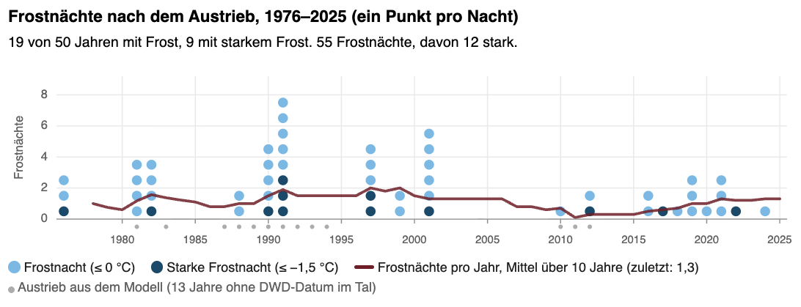
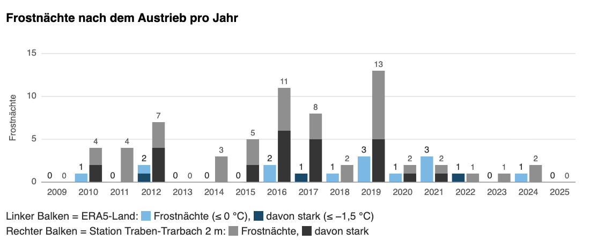

Frost nach dem Austrieb: häufig – und gemessen viermal öfter als im Modell

Modell ERA5-Land, 1976–2025 [3, 4]: 1 Punkt = 1 Frostnacht nach dem Austrieb. Dunkelblau = stark (−1,5 °C oder kälter). Frost in 19 von 50 Jahren, stark in 9.

Links Modell (blau), rechts Station Traben-Trarbach (grau), 2009–2025 [3, 5]: Dunkel = stark. Station 65 Frostnächte, Modell 16.
Daten und Methode
Temperatur: Modell ERA5-Land, jede Stunde seit 1976 [1–3]
Austrieb: DWD Ürzig; sonst Wärmesumme, mit Ürzig getestet [4, 12]
Frost: 0 °C oder kälter. Stark: −1,5 °C oder kälter, schwere Schäden [9]
Test: Station Traben-Trarbach, 1 km weg, Steilhang [5]
Grenzen
Modell: ein Wert für 9 × 9 km, nicht für die Fläche [2]
In Frostnächten ist das Modell im Mittel 2,8 °C zu warm [3, 5]
Am Boden (20 cm) noch 1,6 °C kälter [5]
Einschätzung
Starker Frost: Station in 8 von 18 Jahren [5], Modell in 9 von 50 [3]. Mittleres bis hohes Risiko, unten am Hang am höchsten [9]. Vor dem Vertrag: Sensoren in die Fläche.
[1] Hersbach et al. 2020, ERA5 · [2] Muñoz-Sabater et al. 2021, ERA5-Land · [3] Open-Meteo.com (CC BY 4.0) · [4] DWD Phänologie Weinrebe · [5] Agrarmeteorologie RLP, wetter.rlp.de · [9] Kotremba, Spätfröste aus meteorologischer Sicht, DLR Mosel · [12] Nendel 2010, Int. J. Biometeorol. 54 · Contains modified Copernicus Climate Change Service information (2026)